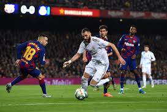
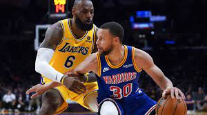
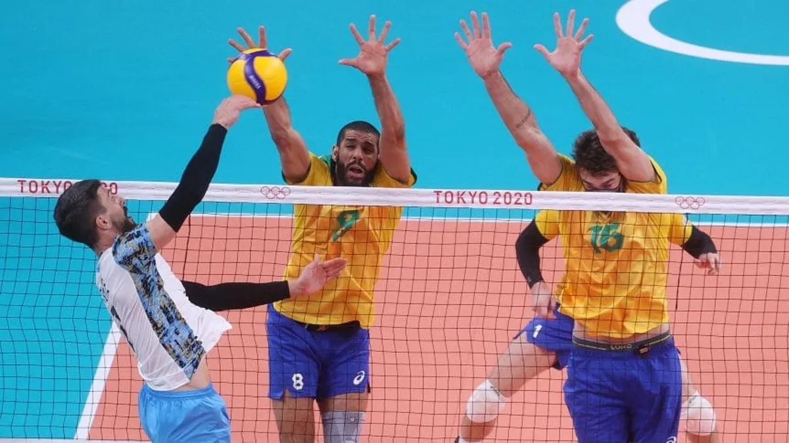

Fútbol
El fútbol, futbol o balompié (del inglés británico football) es un deporte de equipo jugado entre dos conjuntos de once jugadores cada uno, mientras los árbitros se ocupan de que las normas se cumplan correctamente. Es, ampliamente, considerado el deporte más popular del mundo, pues lo practican unas 270 millones de personas. También se le conoce como fútbol 11 por el número de jugadores de un equipo o fútbol asociación, nombre derivado de la «Asociación del Fútbol» (The Football Association), primera federación oficial del mundo en este deporte y que utilizó ese nombre para distinguirlo de otros deportes que incluyen la palabra «fútbol» o «futbol». En algunos países de habla inglesa, también se le conoce como soccer, abreviatura de association, puesto que el nombre de football en esos países se asocia mayoritariamente a otros deportes con esa denominación (principalmente en Estados Unidos, donde el nombre football aplica para el fútbol americano, un deporte totalmente distinto).
Baloncesto
El baloncesto (del inglés basketball; de basket, 'canasta', y ball, 'pelota'), también conocido como básquetbol, basquetbol o simplemente básquet,n. es un deporte de equipo, jugado entre dos conjuntos de cinco jugadores cada uno durante cuatro períodos o cuartos de diez minutos cada uno ―doce minutos cada cuarto en la NBA―. El objetivo del equipo es anotar puntos introduciendo un balón por la canasta, un aro a 3,05 metros sobre la superficie de la pista de juego del que cuelga una red. La puntuación por cada canasta o cesta es de dos o tres puntos, dependiendo de la posición desde la que se efectúa el tiro a canasta, o de uno, si se trata de un tiro libre por una falta de un jugador contrario. El equipo ganador es el que obtiene el mayor número de puntos.
Voley
El voleibol, vóleibol, volibol, vólibol, balonvolea o simplemente vóley (en inglés: volleyball; pronunciado /vɑliˌbɔl/) es un deporte que se juega con una pelota y en el que dos equipos, integrados por seis jugadores cada uno, se enfrentan sobre una área de juego separada por una red central. El objetivo del juego es pasar el balón por encima de la red, logrando que llegue al suelo del campo contrario mientras el equipo adversario intenta impedir simultáneamente que lo consiga, forzándolo a errar en su intento. Surge una fase de ataque en un equipo cuando intenta que el balón toque el suelo del campo contrario mientras que en el otro equipo surge una fase de defensa intentando impedirlo.